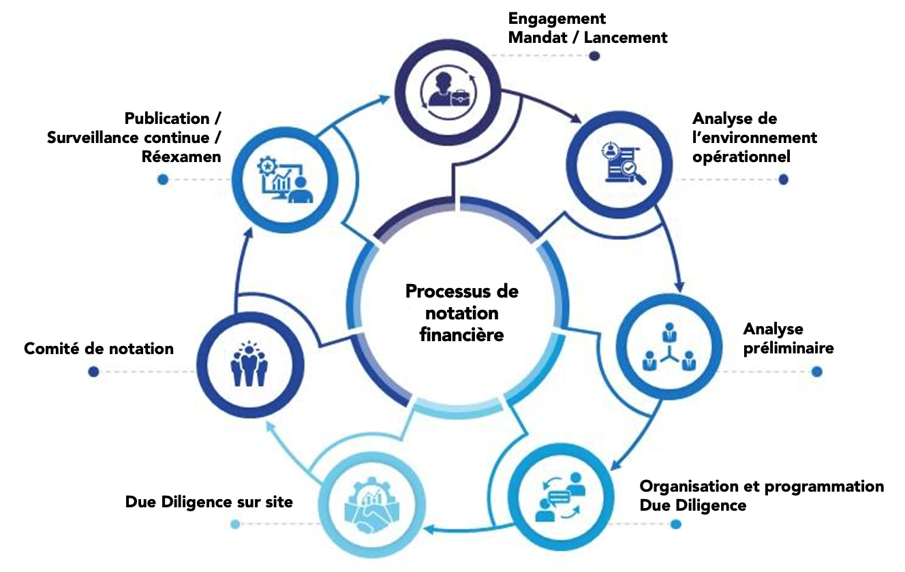
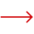

LE PROCESSUS DE NOTATION FINANCIÈRE
Le processus de notation se déroule en plusieurs étapes successives, allant du cadrage initial de la mission à l’attribution de la note par un comité de notation, puis à une surveillance continue permettant d’actualiser la notation en fonction de l’évolution des risques.

LE PÉRIMÈTRE D’ÉMETTEURS

Corporates (entreprises industrielles et commerciales)Notation de la capacité d’une entreprise à honorer ses engagements financiers, à partir de l’analyse de son activité, de sa rentabilité, de sa génération de trésorerie, de son endettement, de sa liquidité et de sa gouvernance.
Évaluation de la solidité d’un établissement financier et de sa capacité à faire face à ses obligations (dépôts, dettes, sinistres), en tenant compte de la qualité des actifs, de la capitalisation, de la rentabilité, de la liquidité, de la gestion des risques et du cadre prudentiel.
Appréciation de la capacité d’une collectivité ou d’une entreprise publique à servir sa dette, en intégrant le cadre institutionnel, l’autonomie financière, la structure des recettes, la discipline budgétaire, la liquidité, la dette et le soutien potentiel de la tutelle.
Analyse de la capacité et de la volonté d’un État à honorer sa dette, à travers ses fondamentaux macroéconomiques, ses finances publiques, sa position extérieure, la flexibilité de sa politique économique et ses facteurs institutionnels et politiques.
Évaluation du profil de risque d’un fonds et de sa capacité à respecter sa politique d’investissement et à faire face aux rachats, en examinant la qualité et la liquidité du portefeuille, la gestion, la gouvernance et la robustesse opérationnelle (dépositaire, valorisation, contrôle).
Notation du risque de crédit d’un instrument ou d’une transaction (obligation, billet, sukuk, prêt, ABS/MBS), en analysant les termes contractuels, la priorité des paiements, les sûretés et rehaussements, le collatéral, le cadre juridique et les risques opérationnels liés à la structure.